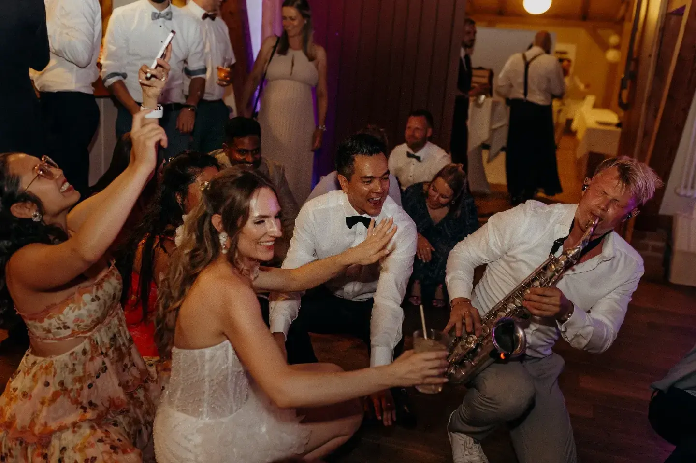
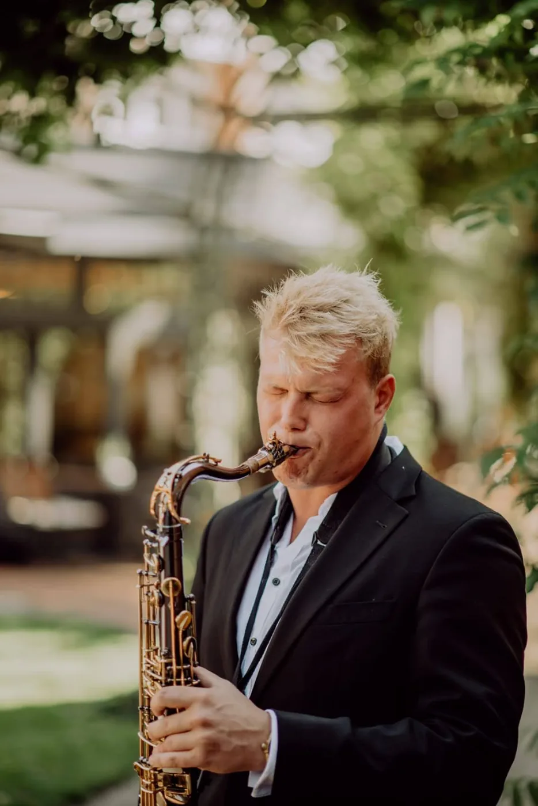
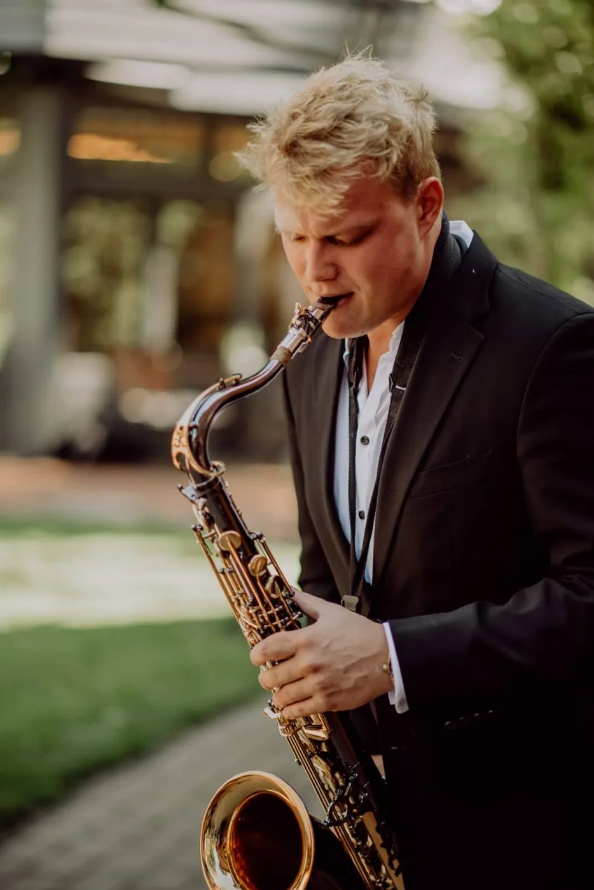
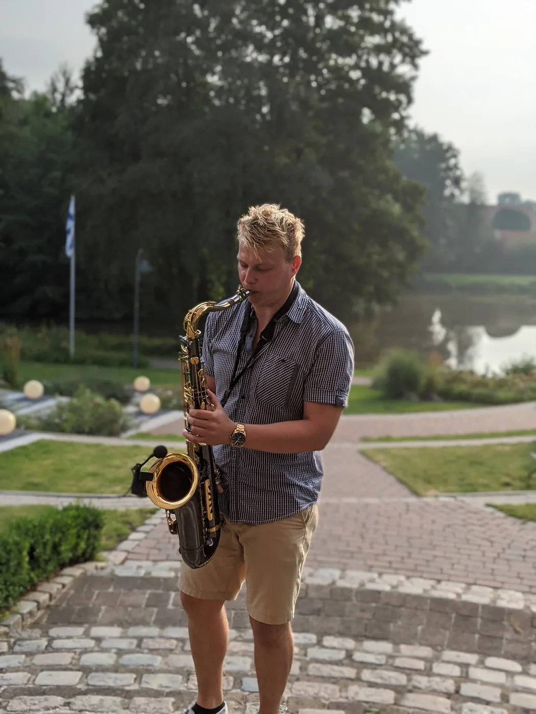
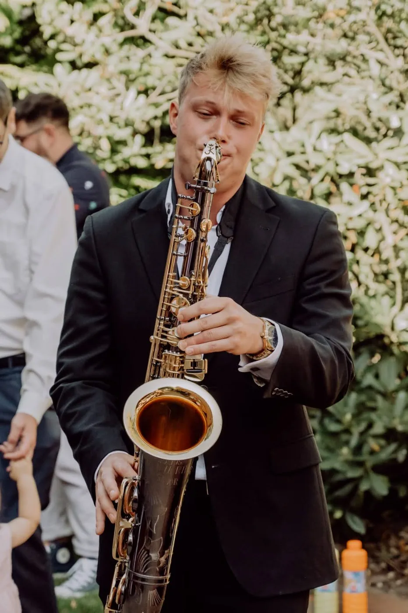
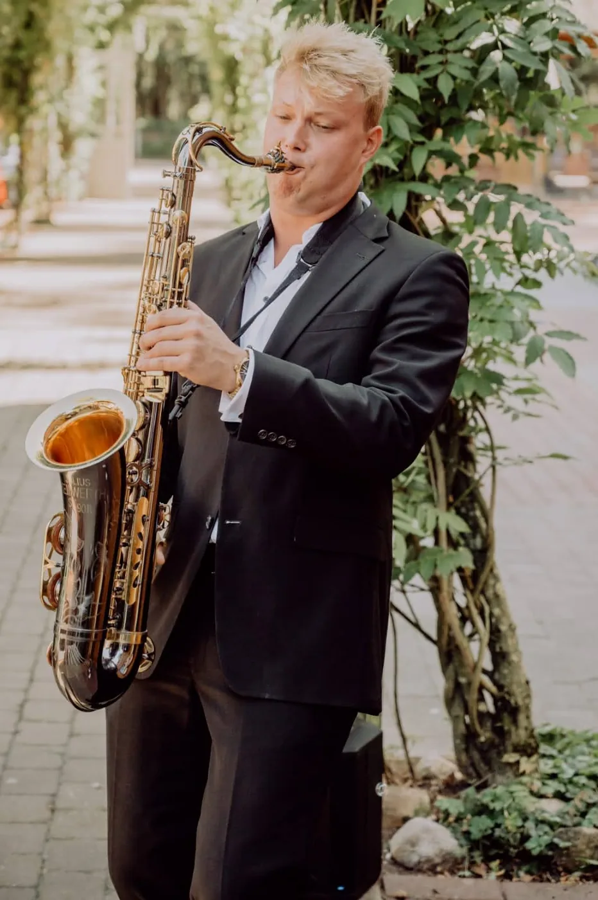
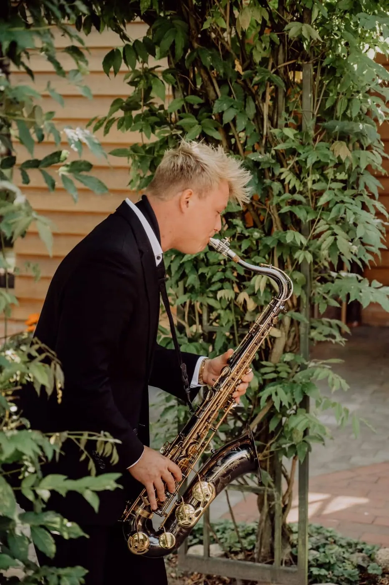
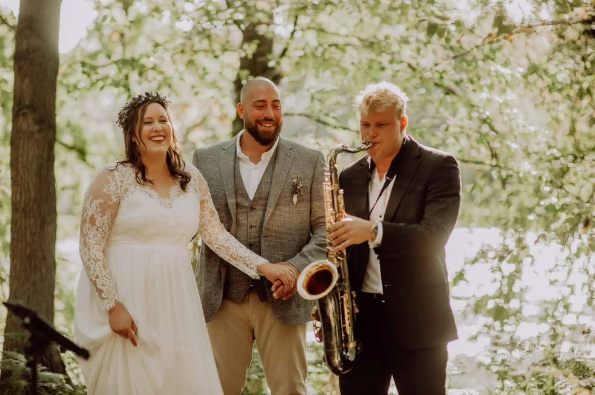
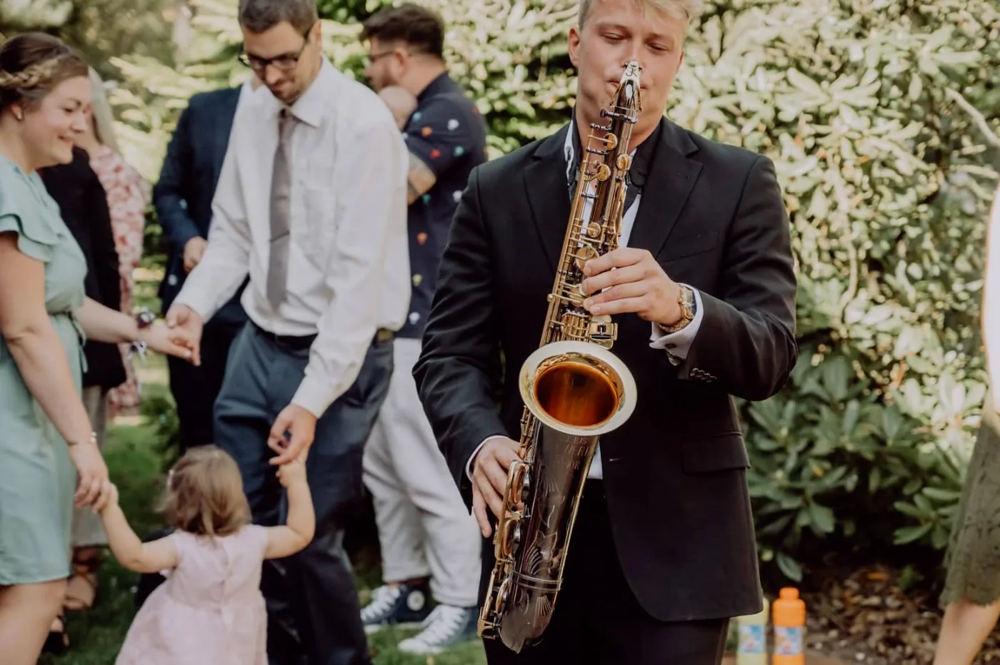
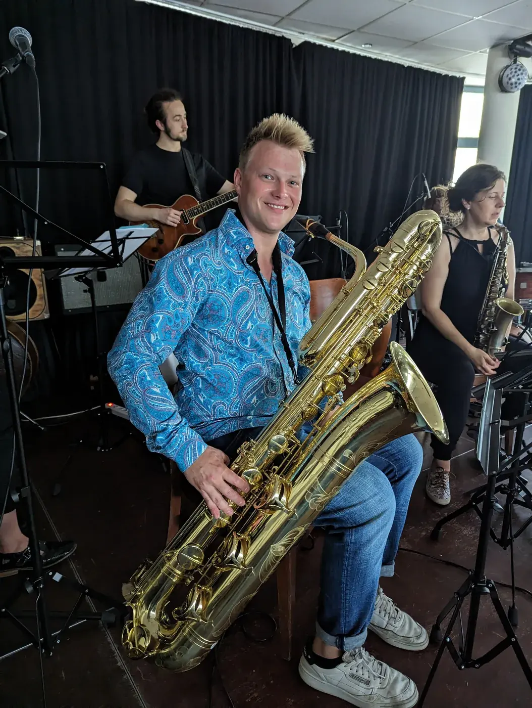

Hörproben & Videos
Videos, Hörproben & Fotos
Show-Reels, Live-Mitschnitte und Solo-Aufnahmen – so klingt Ihr Event.
Live-Eindrücke
Jazz-Standards · live
Direkt aus dem Repertoire – die vollständige Setlist finden Sie unter Über mich.
Show-Reels & Aufnahmen
Fotos

















Mehr hören & sehen
Eigene Musik auf Spotify, aktuelle Event-Eindrücke auf Instagram.